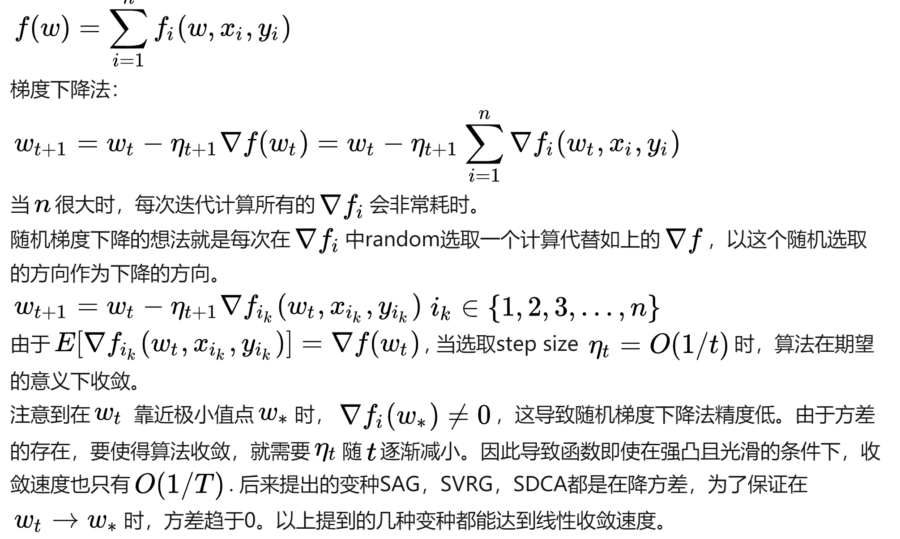
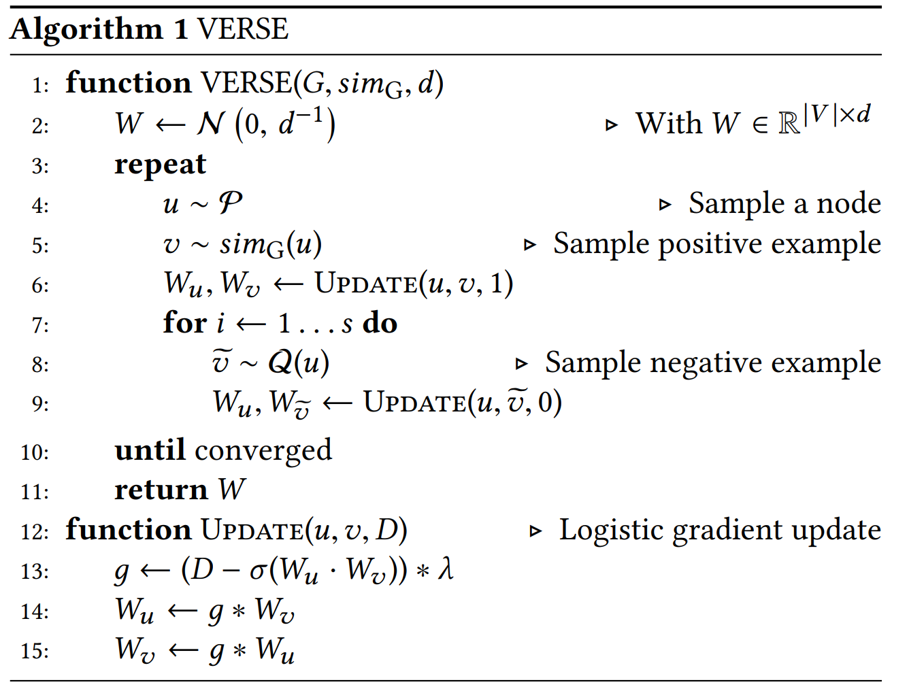

a关于embedding的一些算法总结1 DeepWalk1.1 introductionDeepWalk的文章发表于2014年，属于embedding研究中较早的算法，大概是第一个使用deep learning进行网络分析的，主要是受到了neural language model的启发。其中关键的思想是用Ramdom Walk来随机抽取一些样本点1.2 contributions：• 最早用deep learning来分析图，在short random walks中学习蕴藏的图结构规律• scalable、local、nonlinear1.3 Method1.3.1 Language Modeling为了不让计算过于繁琐，使用了如下策略：
min
Φ-logPr({vi-w,⋯,vi-1,vi+1,⋯,vi+w}| Φ(vi))来最大化不同字之间的相互联系。1.3.2 DeepWalk&SkipGram(1) 对于一个图 G(V,E)，我们将其中的所有点 V 打乱，然后以其中的每一个点为root，行走 t 步，得到一个随机的链：Wvi(2) 对于每次得到的 Wvi 中的每一个点 vj 进行：(a) 找到所有位于它前面 𝜔 和后面 𝜔 的点 uk(a) 对所有的 uk 进行操作：计算 J(Φ)=-logPr(uk|Φ(vj))，然后用梯度下降法更新 Φ：Φ=Φ-𝛼⋅∂J
∂Φ(a)
解释
这一步意味着：既然我见到了一个 uk ，那么以起点 vj 开始，见到一个 uk 的概率就应该被提高
(b) 这里的 Pr 的计算方法是使用 Hierarchical Softmax。因为如果要求出所有的路径然后进行归一化，将过于复杂。所以这里采用了一种“继承”的方法进行求解：Pr(uk| Φ(vj))=log||V||∏l=1Pr(bl| Φ(vj))b0, b1, b2⋯,b[log||V||] is a sequence of trⅇ nodes, b0=root, b[log||V||]=uk(b) 从而将复杂度大大降低(b) (3) 将以上内容重复 𝛾 次. (4) details(a) Stochastic gradient descent：随机梯度下降，每次用一个变化参数的导数改变所有的参数

(b) back-propagation：反向传播算法(b) 这是算法，不是数学定理。从数学上来讲，还是链式法则的原理。只不过为了减少冗余的计算，从上向下进行求导计算并存储，从而使计算与存储非常干净。2 node2vec2.1 Introduction从名字上就非常像文字处理里面的word2vec，工作完成于2016年，基本原理和DeepWalk很类似，其性质也比较相同。2.2 Contribution它与deepwalk的区别在于，它在进行 Random Walk 的时候可以选择一个策略，产生一个bias2.3 Method随机行走的选择策略为：P(ci=x | ci-1=v)=a
𝜋vx
Z
if (v,x)∈E
0
otherwise
;𝛼pq(t,x)=a
1
p
if dtx=0
1
if dtx=1
1
q
if dtx=2
3 LINE3.1 Intro发表于2015：“such a network embedding model which is able to scale to very large, arbitrara types of networks: undirected, directed and/or weighted.”（我认为这一篇逻辑十分清楚，写得很好）3.2 Contributions• 使用了一阶proximity（直接相连）与二阶（周围环境相同）• 将语言处理里面使用到的Negative sampling用于这里的优化3.3 Method3.3.1 First-order Proximity定义一个joint probability：p1(vi,vj)=1
1+e-uTi⋅uj这里的 u 就是我们想要的那个表示。这个使用了表示后向量 joint probability 应该与原先图中的点的 joint probability 越接近越好。那么我们再定义一个 ˆp1:ˆp1(i,j)=wij
W, where W=∑i,j ∈ Ewij这里的 w 就是两个点之间的权重。我们想要这个 p,ˆp 越接近越好，所以我们最小化他们的 KL-divergenceO1=-∑(i,j)∈Ewijlogp1(vi,vj)3.3.2 Second-order Proximity定义 the probability of "context" vj generated by vertex vi as:p2(vj|vi)=eu'Tj⋅ui
4.3 Instantiations of simG现在考虑一些例子。其中取 simG 的方法有如下
Definition1Personal PageRank
这是一个比较常见的similarity measure. Given a starting node distribution s, dampingfactor α, and the normalized adjacency matrix A, It's defined by the recursive equation:𝜋s=𝛼s+(1-𝛼)𝜋sA它其实是PageRank的一个推广。PageRank的定义很简单，一个网站的值平均分给它指向的多个网站，然后由于考虑到用户有随机浏览的可能（也是为了避免进入“黑洞”网站），设置一个衰减系数（damping factor）d∈(0,1)，Pr(pi)=1-d
|I(u)||I(v)|I(u)∑i=1I(v)∑j=1simSRG(Ii(u),Ij(v))它直接的复杂度高达 O(n4). 我们可以通过 SimRank-Aware Random Walks 方法对它进行近似.
4.4 Algorithm

4.5 supplement: noise-contrastive-estimation4.5.1 definition of the estimatorFor a statistical model which is specified through an unnormalized pdf p0m(⋅;𝛼), we include the normalization constant as another parameter c of the model. That is, we define lnpm(⋅;𝜃)=ln0pm(⋅;𝛼)+c, where 𝜃={𝛼,c}.Note that pm(⋅:𝜃) will only integrate to one for some specific choice of the parameter c.Denote by X=(x1,⋯xT) the observed data set, consisting of T ovservations of the data x, and by Y=(y1,⋯yT)an artificially generated data set of noise y with distribution pn(⋅). The estimator ˆ𝜃T is defined to be the 𝜃 which maximizes the objective function JT(𝜃)=1
2T∑tln[h(xt;𝜃)]+ln[1-h(yt;𝜃)]whereh(u; 𝜃)=1
1+exp[-G(u;𝜃)], G(u;𝜃)=lnpm(u;𝜃)-lnpn(u).Below, we will denote the logistic function by r(⋅) so that h(u;𝜃)=r(G(u;𝜃))4.5.2 Explanation(1) For G(u;𝜃) ，if the given random variable u definitely generates an x, then G=+∞. On the contrary, G=-∞. We can suppose that good 𝜃 can generate a big G for x, and a small G for y. (1) (2) For h(u;𝜃), good 𝜃 can generate 1 for x and 0 for y.(2) (3) And for the log-likelyhood regression, good 𝜃 can make large ln[h(xt;𝜃) and both large ln[1-h(yt;𝜃)].(3) (4) So find the maximum of JT(𝜃)4.5.3 对数几率回归对于分类问题常用的sigmoid函数：y=1
1+e-wTx+b它具有如下性质：• 正负几率的比值：几率的对数是线性的。1-y=e-wTx+b
1+e-wTx+b=1
1+ewTx+b∴y
1-y=ewTx+b∴lny
1-y=wTx+b• 使用概率的方法写出lnP(y=1|x)
P(y=0|x)=wTx+b• 显然有：P(y=1|x)=ewTx+b
1+ewTx+b;P(y=0|x)=1
1+ewTx+b• 我们可以用极大似然估计的方法：在什么样的参数w下，已知分布给出我们看到这些 x 的可能性最大？ℓ(𝜔,b)=m∑i=1lnp(yi|xi;𝜔,b)• 又因为这个概率可以区分y=±1 这两种情况，写成：p(yi|xi;𝜔,b)=yip1(xi;𝜔,b)+(1-yi)p2(xi;𝜔,b)• 现在就要让它最大。根据凸优化理论，可以用梯度法求下面这个的最小值ℓ(𝛽)=m∑i=1(-yi𝛽Tˆxi+ln(1+e𝛽txi))